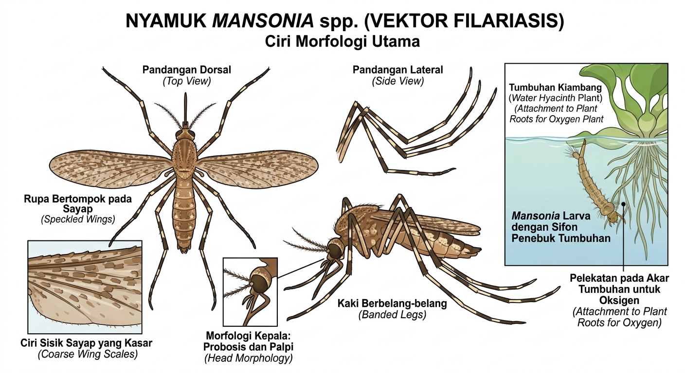
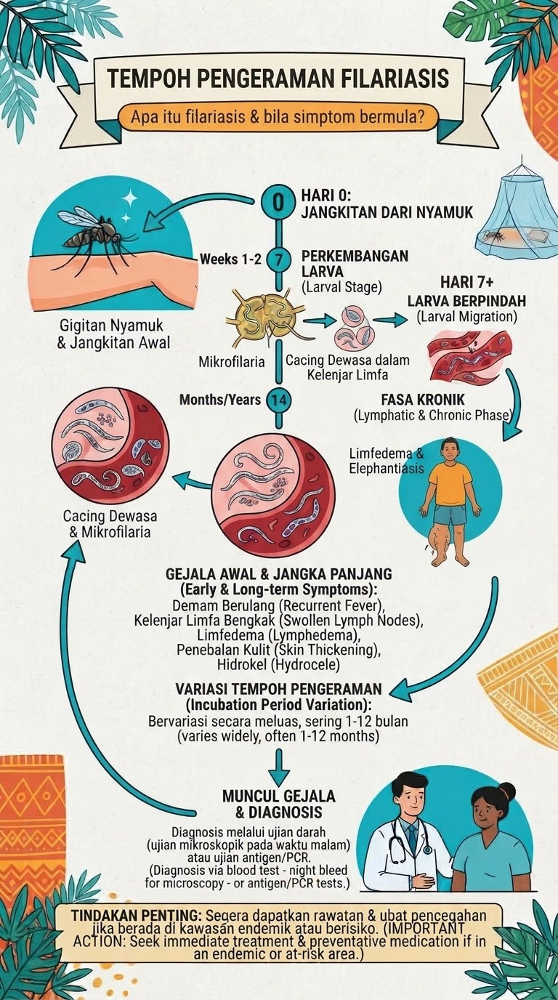

Pengenalan dan Sejarah Filariasis
Filariasis Limfatik, atau lebih dikenali di Malaysia sebagai penyakit untut (kaki gajah), ialah sejenis penyakit berjangkit bawaan vektor yang dikategorikan sebagai Penyakit Tropika Terabai (Neglected Tropical Diseases – NTD). Penyakit ini disebabkan oleh jangkitan cacing parasit halus berbentuk benang daripada keluarga Filariodidea, iaitu Wuchereria bancrofti, Brugia malayi, dan Brugia timori. Di Malaysia, spesies utama yang menyebabkan jangkitan ialah Brugia malayi.
Rekod Purba: Gejala pembengkakan melampau pada anggota badan akibat filariasis telah direkodkan sejak zaman tamadun purba di Mesir, India, dan China ribuan tahun lalu.
Penemuan Saintifik: Pada abad ke-19, penyelidik seperti Jean-Nicolas Demarquay, Otto Wucherer, dan Timothy Lewis menemui larva parasit (mikrofilaria) di dalam cecair badan dan darah manusia.
Penemuan Vektor Nyamuk (1877): Seorang pakar perubatan British, Sir Patrick Manson, mencipta sejarah perubatan apabila berjaya membuktikan bahawa nyamuk ialah pembawa (vektor) kepada cacing filaria. Ini merupakan penemuan pertama dalam sejarah yang membuktikan serangga boleh menyebarkan penyakit kepada manusia.
Konteks Malaysia: Kementerian Kesihatan Malaysia (KKM) telah melancarkan Program Eliminasi Filariasis Limfatik Kebangsaan bagi membasmi penularan penyakit ini di kawasan-kawasan endemik seperti di Sabah, Sarawak, Kedah, Perak, Johor, Pahang, Terengganu, dan Kelantan.
Vektor Utama Filariasis
Penyakit ini disebarkan oleh nyamuk betina yang membawa larva cacing filaria. Jenis nyamuk vektor berbeza mengikut spesies cacing dan kawasan geografi:

- Nyamuk Mansonia: Vektor utama di kawasan luar bandar, paya, dan hutan di Malaysia yang menyebarkan cacing Brugia malayi.
- Nyamuk Culex: Banyak membiak di kawasan bandar dan pinggir bandar (air bertakung yang kotor) dan menjadi pembawa utama Wuchereria bancrofti.
- Nyamuk Anopheles: Ditemui di kawasan pedalaman dan turut berperanan menyebarkan cacing Wuchereria bancrofti serta Brugia malayi.
- Nyamuk Aedes: Menjadi vektor utama di beberapa kawasan kepulauan Pasifik.
Morfologi Nyamuk Vektor Filariasis
Mengenali ciri fizikal (morfologi) nyamuk vektor membantu dalam aktiviti kawalan dan pemantauan kesihatan awam:
| Jenis Nyamuk | Ciri Telur Dan Larva | Ciri Nyamuk Dewasa |
|---|---|---|
| Mansonia | Telur diletakkan secara berkelompok di bawah permukaan daun tumbuhan air (seperti kiambang atau keladi bunting). Larva mempunyai sifon tajam untuk menebuk akar tumbuhan bagi mendapatkan oksigen. | Berwarna keperangan dengan sisik yang besar dan kasar pada sayap, memberikan rupa bertompok-tompok (speckled). |
| Culex | Telur diletakkan secara berkelompok membentuk rakit di permukaan air. Larva mempunyai sifon pernafasan yang panjang dan langsing serta tergantung menyerong di permukaan air. | Berwarna coklat kusam tanpa corak jalur putih yang ketara. Hujung abdomen berbentuk tumpul. |
| Anopheles | Telur mempunyai pelampung udara di kedua-dua sisi dan diletakkan satu persatu. Larva tidak mempunyai sifon dan berehat selari dengan permukaan air. | Sayap mempunyai tompok hitam dan putih. Apabila hinggap, badannya membentuk sudut sekitar 45 darjah dengan permukaan. |
Cara Jangkitan dan Tempoh Pengeraman
-
Bagaimana Jangkitan Berlaku:
- Gigitan Pertama: Nyamuk betina menggigit individu yang dijangkiti filariasis dan menghisap darah yang mengandungi anak cacing (mikrofilaria).
- Perkembangan dalam Nyamuk: Di dalam badan nyamuk, mikrofilaria membesar menjadi larva peringkat ketiga (L3) yang bersifat infektif dalam tempoh 10 hingga 14 hari.
- Gigitan Kedua: Apabila nyamuk yang dijangkiti ini menggigit orang yang sihat, larva infektif akan masuk ke dalam kulit melalui luka gigitan nyamuk.
- Kerosakan Sistem Limfa: Larva bergerak menuju ke saluran dan nodus limfa manusia, lalu membesar menjadi cacing dewasa. Cacing dewasa ini boleh hidup selama 6 hingga 8 tahun, membiak dan menyekat aliran cecair limfa. Sekatan ini menyebabkan pengumpulan cecair dan pembengkakan kekal pada kaki, tangan, payudara, atau skrotum (hydrocele).
-
Tempoh Pengeraman (Incubation Period)
- Tempoh Pengeraman Biologi (Pre-patent period): Tempoh dari gigitan nyamuk sehingga mikrofilaria mula dikesan dalam darah manusia biasanya mengambil masa sekitar 2 hingga 3 bulan bagi Brugia malayi, dan 8 hingga 12 bulan (atau sehingga 15 bulan) bagi Wuchereria bancrofti.
- Tempoh Pengeraman Klinikal: Ramai pesakit tidak menunjukkan sebarang gejala pada peringkat awal walaupun saluran limfa mereka sedang rosak. Gejala kronik seperti pembengkakan kekal (untut) selalunya hanya muncul bertahun-tahun selepas jangkitan awal berlaku.

Tanda dan Gejala Filariasis
Jangkitan filariasis terbahagi kepada tiga peringkat utama: tanpa gejala, peringkat akut (mendadak), dan peringkat kronik (berpanjangan).
-
Jangkitan Tanpa Gejala (Asymptomatic)
- Majoriti individu yang dijangkiti tidak menunjukkan sebarang tanda fizikal luaran pada peringkat awal.
- Walaupun kelihatan sihat, cacing parasit di dalam badan sudah mula merosakkan sistem limfa, buah pinggang, serta melemahkan sistem imun pesakit secara senyap.
-
Gejala Akut (Peringkat Awal / Mendadak)
Gejala ini sering berlaku secara berulang apabila sistem imun bertindak balas terhadap cacing atau akibat jangkitan bakteria sekunder pada kulit yang rosak:
- Demam Filariasis: Demam panas yang datang secara tiba-tiba dan berulang, disertai rasa menggigil serta sakit kepala.
- Keradangan Nodus Limfa (Lymphadenitis): Kelenjar limfa (terutamanya di celah paha atau ketiak) menjadi bengkak, merah, hangat, dan sakit apabila disentuh.
- Keradangan Saluran Limfa (Lymphangitis): Timbul garisan merah yang sakit di bawah kulit, menjalar mengikut laluan saluran limfa pada anggota badan yang dijangkiti.
- Keradangan pada Bahagian Sulit Lelaki: Sakit dan bengkak pada buah zakar atau saluran sperma (epididymo-orchitis).
-
Gejala Kronik (Peringkat Lanjutan)
Jika tidak dirawat, kerosakan saluran limfa selama bertahun-tahun akan menyebabkan sekatan cecair kekal dan kecacatan fizikal:
- Limfoedema: Pembengkakan pada tisu badan akibat pengumpulan cecair limfa, paling kerap berlaku pada bahagian kaki, dan kadangkala pada tangan atau payudara.
- Elefantiasis (Penyakit Untut / Kaki Gajah): Peringkat limfoedema yang teruk di mana anggota badan membengkak dengan sangat besar. Kulit menjadi keras, menebal, kering, gelap, merekah, dan berlipat-lipat menyerupai kulit gajah.
- Hidrokel (Hydrocele): Pengumpulan cecair di dalam kantung buah zakar (skrotum) lelaki, menyebabkan ia membengkak dengan ketara.
- Kiluria (Chyluria): Air kencing menjadi keruh dan berwarna putih seperti susu akibat kebocoran cecair limfa ke dalam saluran kencing.
Cara Pencegahan Filariasis
Pencegahan filariasis bergantung kepada dua strategi utama: menghentikan penularan parasit dan mengelakkan gigitan nyamuk.
- Pemberian Ubat Secara Besar-besaran (Mass Drug Administration - MDA): Penduduk di kawasan endemik diberikan ubat pencegahan secara percuma oleh pihak kesihatan sekali setahun selama sekurang-kurangnya 5 pusingan bagi membunuh larva cacing dalam darah dan memutuskan rantaian jangkitan.
- Penggunaan Kelambu Berubat: Tidur di dalam kelambu yang dirawat dengan racun serangga (insecticide-treated nets), terutamanya pada waktu malam kerana kebanyakan nyamuk vektor aktif menggigit pada waktu malam.
- Perlindungan Diri: Memakai pakaian berlengan panjang dan seluar panjang serta menyapu losyen penghalau nyamuk (repellent) apabila berada di kawasan berisiko atau hutan/paya.
- Kawalan Tempat Pembiakan Nyamuk: Membersihkan longkang yang tersumbat, membuang takungan air kotor, dan mengawal pertumbuhan tumbuhan air di kawasan paya atau kolam berhampiran kediaman.
- Pemasangan Jaring Nyamuk: Memasang jaring halus pada tingkap dan pintu rumah untuk menghalang nyamuk daripada masuk ke dalam rumah.
Cara Rawatan Filariasis
Rawatan bertujuan untuk membunuh parasit di dalam badan serta menguruskan gejala bengkak bagi mengelakkan kecacatan kekal dan jangkitan kuman sekunder.
- Ubat Anti-Parasit: Doktor akan memberikan ubat khusus seperti Diethylcarbamazine (DEC), Albendazole, atau Ivermectin. Ubat-ubatan ini sangat berkesan untuk membunuh mikrofilaria (larva) dalam aliran darah supaya penyakit tidak merebak kepada orang lain, serta membantu mematikan sebahagian cacing dewasa. Dalam kes tertentu, antibiotik seperti Doxycycline juga digunakan.
- Penjagaan Kebersihan Anggota Terjejas: Bagi pesakit yang sudah mengalami pembengkakan (limfoedema/untut), penjagaan kebersihan harian adalah sangat penting. Bahagian yang bengkak perlu dibasuh dengan sabun dan air bersih setiap hari, dikeringkan dengan teliti (terutama di celah-celah jari kaki), dan disapu krim antikulat atau antibakteria jika terdapat luka kecil bagi mengelakkan jangkitan bakteria yang menyebabkan demam berulang.
- Senaman dan Pengurusan Bengkak: Melakukan senaman ringan pada anggota yang bengkak dan meninggikan kaki (limb elevation) semasa berehat atau tidur untuk membantu melancarkan aliran cecair limfa.
- Pembedahan: Bagi lelaki yang mengalami pembengkakan skrotum yang teruk (hydrocele), pembedahan boleh dilakukan untuk membuang cecair dan memulihkan keadaan.